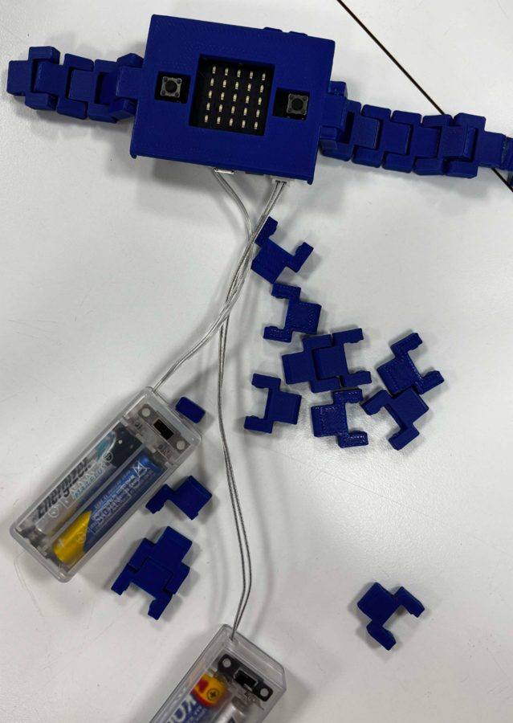
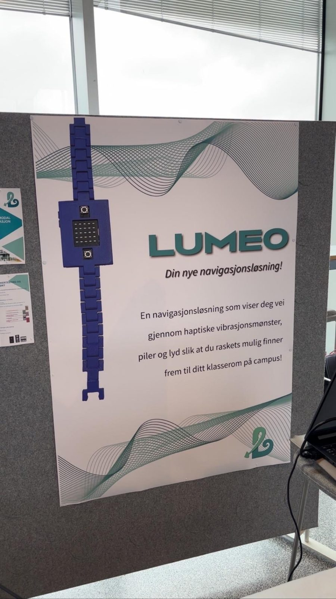
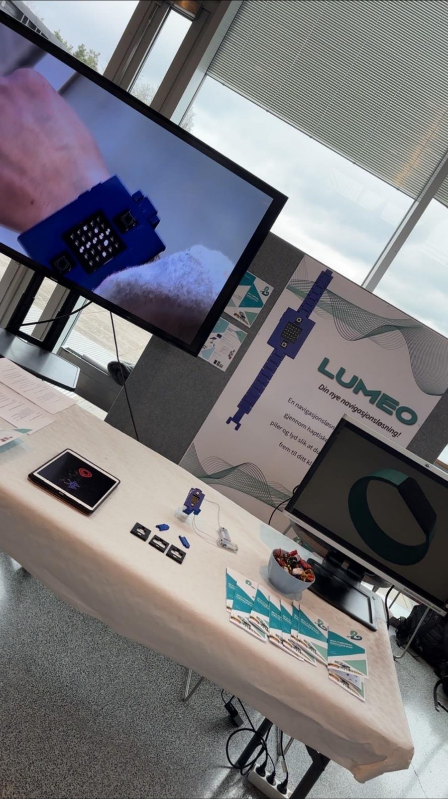
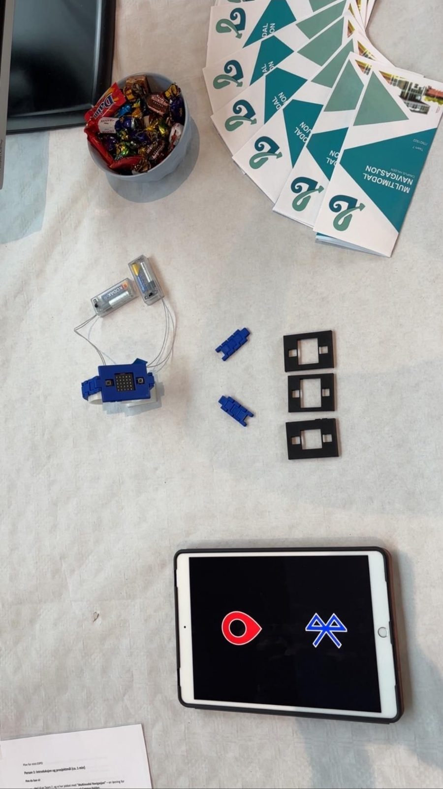
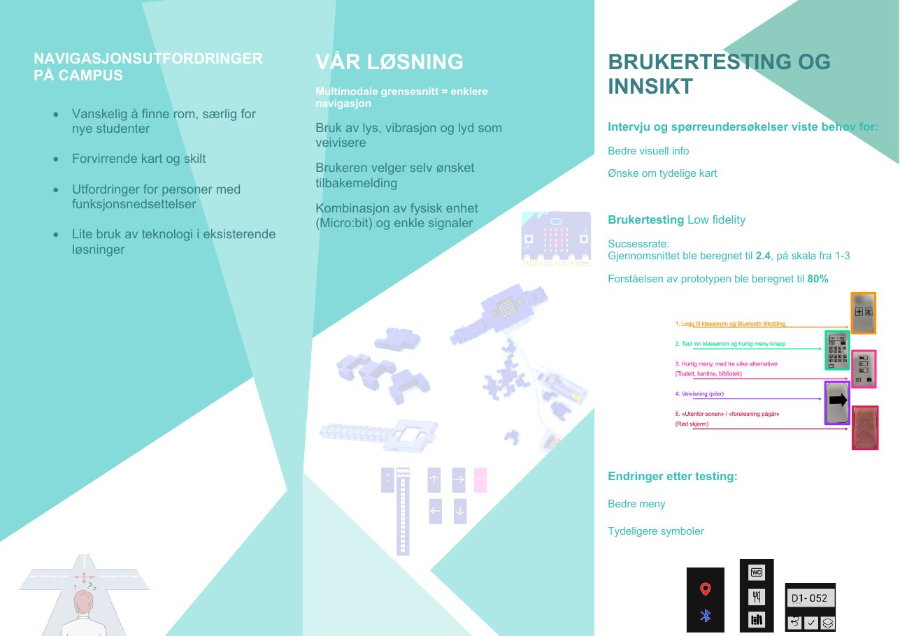

Screens
- Quick menu (toilet, canteen, library)100%
- Direction arrows87%
- "Outside the zone" screen80%
- Add classroom67%
- Type in classroom67%
Share of test users who understood each screen.
UI/UX · Prototyping
A wearable that guides people around Campus Remmen with light, sound and vibration. Designed for new students, visitors and people with impaired sight or hearing.

Campus Remmen is large and spread out, with several floors and entrances that are not always well signposted. There was no digital indoor navigation, only static maps and help from reception.
Design Thinking, run in short sprints from February to May.
The LED display shows messages and room numbers, and arrows when you move your wrist.
A short melody plays when a message has finished showing.
A motor under the watch gives direction through patterns you can feel.
Figma screens for choosing a room, quick menu and directions.
We tested with 3–5 students from each of the other groups, at two stations: one for the screens and one for the vibration patterns. A second test used a blindfold and noise-cancelling headphones to simulate a visually impaired user.
Share of test users who understood each screen.
Both patterns had a 75% success rate. Pattern 1 (short for left/right, long for forward/back) felt easier, because pattern 2 made people count vibrations.
We presented Lumeo with a poster, a brochure and the working prototype.




I was the project leader. That meant: